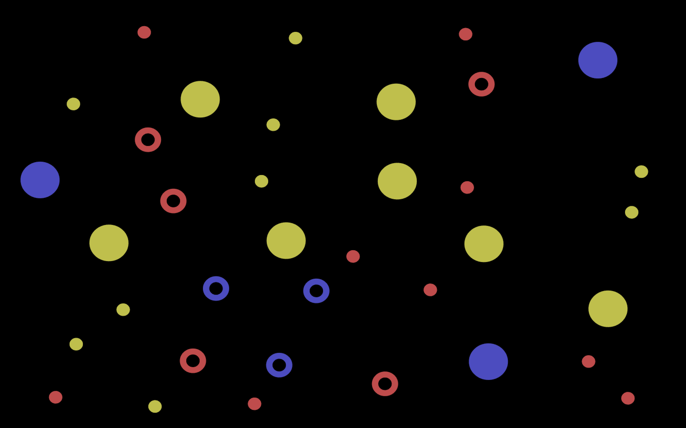
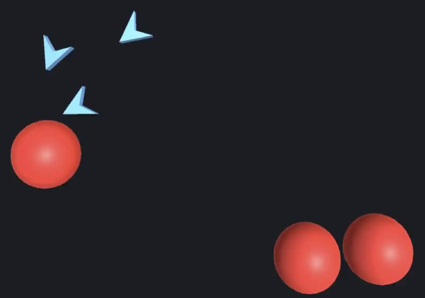
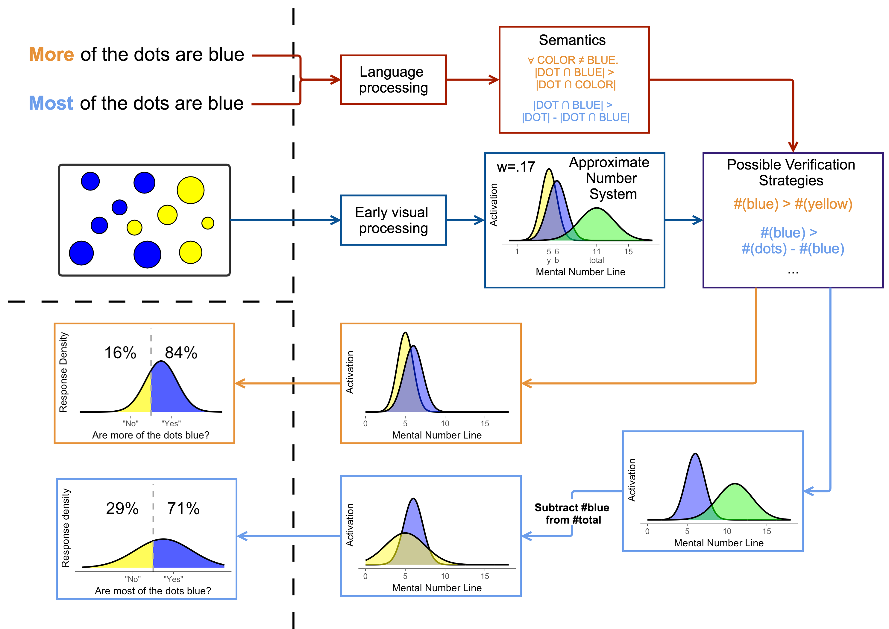

Hi!
I'm a fifth year PhD student in the Linguistics department at the University of Maryland, where I'm also part of the Language Science Center. Broadly, I'm interested in meaning, its acquisition, and the relationship between linguistic and conceptual structure. More narrowly, my research uses a range of methods including psycholinguistic experiments, psychophysical modeling, and corpus analysis to identify formal differences in the mental representations of logically equivalent expressions and show how these differences affect the interface between language and non-linguistic conceptual systems. I'm advised by Jeff Lidz and Paul Pietroski.
Research Projects
Universal Quantifiers:
 A sentence like every circle is blue could be mentally represented as (i) a relation between two independent sets (the circles are a subset of the blue things), (ii) a non-relational description of how the predicate applies to the members of one set ("is blue" applies exhaustively to the set of circles), or (iii) in a completely first-order way that implicates no sets at all (each thing that’s a circle is blue). Logically, these descriptions are equivalent. But psychologically, they correspond to distinct hypotheses about speakers’ mental lives. To tease them apart, my collaborators and I ask how well adults and kids remember individual properties (a specific circle’s color) versus group properties (approximate cardinality; center of mass) after evaluating sentences with each or every. We find that given sentences like every circle is blue, participants recall group properties for the circles, but not for the blue things or even the blue circles. And if each is substituted for every, they recall no group properties at all. This suggests that each has a meaning like (iii) while every has a meaning like (ii). We argue that these representations have consequences for our understanding of the semantic universal “conservativity” and of the ways in which parents use these quantifiers in speech to children.Collaborators: Jeff Lidz, Paul Pietroski, Justin Halberda, Alexander Williams
Precursors of Quantification in Infancy:
 When do infants have access to quantificational concepts, like those underlying each and all? So far, we’ve found that even 10 month-olds distinguish collective and distributive exhaustive actions. In particular, they treat videos of three chevrons chasing a single ball together as different in kind from perceptually similar videos in which three chevrons each individually chase their own ball. Follow-up experiments are underway to control for low-level perceptual differences (e.g., spatial dispersion) and to relate these findings to the working memory literature: if infants treat the agents of chasing as a single group in the collective videos, there should be no limit to the number of chevrons they can represent; if they treat the agents of chasing as individuals in the distributive videos, their working memory should become overloaded as more chevrons are added. We’ve also started looking for evidence that infants have access to other quantificational concepts (e.g., can they learn monotonic and antitonic functions?)Collaborators: Nicolò Cesana-Arlotti, Jeff Lidz, Justin Halberda
Majority Quantifiers:
 In a picture with 8 yellow dots and 12 blue dots, both of these sentences are true:(1) most of the dots are blue.
(2) more of the dots are blue.
But while (1) calls for comparing the number of blue dots to the total number of dots, (2) calls for comparing the blue and yellow dots directly. My collaborators and I argue that these subtle differences in meaning influence how adults and children expect visual scenes to look (e.g., given (1), they create pictures like A but given (2), they create pictures like B), what information they remember from those scenes (they encode only the set of blue dots given (1) but encode both blue and yellow given (2)), and how easily they are able to judge the sentence as true (evaluating (2) is easier, since direct comparisons introduce less noise than proportional comparisons). Together, these effects demonstrate that more and most have discoverable decompositional mental representations that are (at least largely) shared across speakers of English at a fine-grained level of representational detail. We've recently started to extend these predictions to Cantonese majority quantifiers as well.
Collaborators: Darko Odic, Alexis Wellwood, Tim Hunter, Yu'an Yang, Elaine Lau, Jeff Lidz, Paul Pietroski, Justin Halberda
Event Concepts & Syntactic Bootstrapping:
 Learners use the syntactic context of a word to help narrow down their hypothesis space about its meaning. For example, they relate syntactic arguments and event participants in verb learning. But what is the nature of this relation? Do they expect the number of participants perceived in an event to match one-to-one the number of arguments in the clause describing that event? Or do they exploit knowledge of more sophisticated relationships and expect that particular argument positions will name certain participant roles? To this end, we’ve identified events -- like a girl taking a truck from a boy -- that infants plausibly view under a 3-participant concept but that adults often describe with transitive clauses like "The girl took the truck" (without mentioning from whom). We’re using these videos to test how young learners' hypotheses about novel verb meanings change depending on the syntactic frame in which they’re presented.
Learners use the syntactic context of a word to help narrow down their hypothesis space about its meaning. For example, they relate syntactic arguments and event participants in verb learning. But what is the nature of this relation? Do they expect the number of participants perceived in an event to match one-to-one the number of arguments in the clause describing that event? Or do they exploit knowledge of more sophisticated relationships and expect that particular argument positions will name certain participant roles? To this end, we’ve identified events -- like a girl taking a truck from a boy -- that infants plausibly view under a 3-participant concept but that adults often describe with transitive clauses like "The girl took the truck" (without mentioning from whom). We’re using these videos to test how young learners' hypotheses about novel verb meanings change depending on the syntactic frame in which they’re presented.
Collaborators: Laurel Perkins, Mina Hirzel, Jeff Lidz, Alexander Williams
Pre-UMD: Before coming to Maryland I studied Cognitive Science at Johns Hopkins. I managed Justin Halberda's Vision lab and learned a lot about the Approximate Number System. I was also fortunate enough to work with Akira Omaki and Emily Atkinson on a project investigating the relationship between working memory and parsing.
Output
Papers
Talks
Posters
Teaching & Mentoring
Courses instructed:
Spring 2020: Language and Thought (LING449T)Does language shape cognition? Do the details of our native language(s) determine how we perceive the world? Can learning language give us access to new concepts? In this course, we’ll explore these questions through case studies, including color categorization, spatial frames of reference, navigation, theory of mind, event representations, and number. Along the way, we’ll discuss the nature of concepts as well as ways that linguists can leverage the relationship between language and thought to study natural language meaning.
Courses TAed:
Fall 2019: Grammar and Meaning (LING410; Instructor: Valentine Hacquard)Spring 2019: Child Language Acquisition (LING444; Instructor: Jeffrey Lidz)
Fall 2018: Language and Mind (LING240; Instructor: Tonia Bleam)
Spring 2018: Introductory Linguistics (LING200; Instructor: Tonia Bleam)
Mentoring
At UMD, I've served as the mentor for 7 undergraduate research assistants and as the mentor for a high school intern, who won the Washington Academy of Science's award for Best Paper in Behavioral Sciences.Contact Info
Check out what my awesome cohort at UMD Ling is up to:
Sigwan Thivierge, Mina Hirzel, Anouk Dieuleveut, Aaron Doliana, and Rodrigo Ranero.